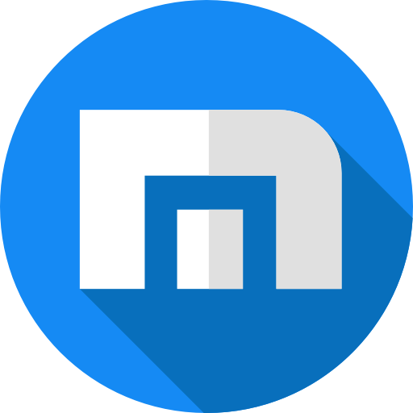

Navegador Maxthon
Descripción / Proposito
Maxthon es un navegador web multifuncional que fue diseñado para ofrecer una experiencia de navegación
fluida, rápida y segura. Su principal objetivo es ofrecer una plataforma que sea compatible con diferentes
tecnologías web, al mismo tiempo que mejora la privacidad y la comodidad del usuario mediante herramientas
como el bloqueador de anuncios, la sincronización en la nube y un modo de lectura optimizado.
Fecha de Lanzamiento
Maxthon fue lanzado en el año 2002 bajo el nombre original de MyIE2, como una modificación del navegador
Internet Explorer, antes de ser rebautizado como Maxthon en 2003. Desde entonces, ha evolucionado,
ofreciendo nuevas características y actualizaciones a lo largo de los años.
Ventajas
- Compatibilidad Multimotor: Utiliza motores de renderizado como Trident, WebKit y Blink, lo que le
permite ser compatible con una amplia gama de sitios web.
- Sincronización en la Nube: Permite sincronizar marcadores, historial, contraseñas y configuraciones en
varios dispositivos.
- Sincronización en la Nube: Permite sincronizar marcadores, historial, contraseñas y configuraciones en
varios dispositivos.
Desventajas
- Popularidad Limitada: A pesar de sus características, Maxthon no tiene la misma cuota de mercado que
otros navegadores populares como Chrome, Firefox o Edge, lo que puede dificultar el soporte a largo
plazo.
- Problemas de privacidad: Aunque ofrece opciones de privacidad, algunos usuarios consideran que la
recopilación de datos por parte de la empresa matriz (Maxthon International) podría ser un problema para
los más conscientes de la privacidad.
¿Es adecuado para usarlo en el desarrollo de paginas y aplicaciones web?
No es el navegador principal recomendado para el desarrollo de aplicaciones web debido a las siguientes
razones:
- Compatibilidad limitada: Aunque Maxthon es compatible con varios motores de renderizado, su cuota de
mercado limitada significa que no se utiliza ampliamente en la industria, lo que puede llevar a
problemas de compatibilidad al probar una aplicación web en este navegador.
- Falta de enfoque en el desarrollo: Navegadores como Google Chrome y Mozilla Firefox son más populares
entre los desarrolladores, ya que ofrecen herramientas de desarrollo más avanzadas y extensas, y tienen
una comunidad de soporte más activa.
- Posibles problemas de seguridad: Aunque Maxthon tiene algunas características de privacidad, la
percepción general es que no está tan centrado en la seguridad como otros navegadores orientados a
desarrolladores, como Firefox o Brave.